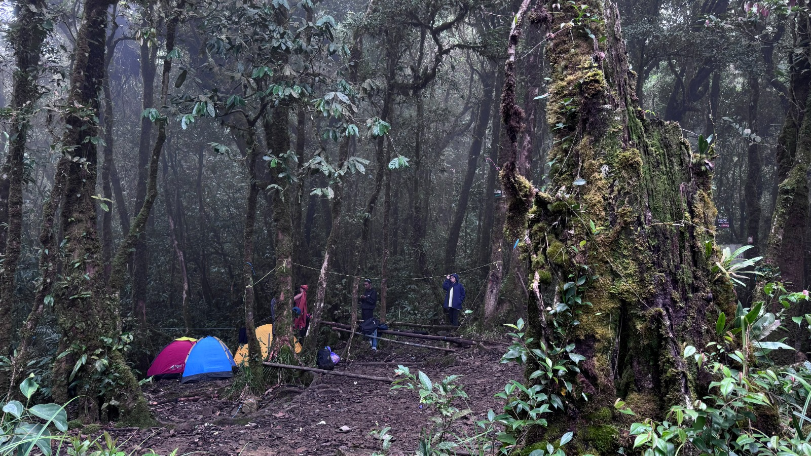

Daya Tarik Pegunungan Meratus
informasi

Pohon Kariwaya Meratus
Pohon kariwaya yang ada di Meratus sebagai pintu gerbang pendakian ke puncak gunung halau-halau

balai adat kiyu
Balai Adat Kiyu berada di Kampung Kiyu, Desa Hinas Kiri, Kecamatan Batang Alai Timur, Kabupaten Hulu Sungai Tengah, Kalimantan Selatan. Kawasan ini merupakan salah satu perkampungan masyarakat Dayak Meratus yang masih menjaga tradisi dan kearifan lokal secara turun-temurun.

Air Terjun Sungai Karuh
Air Terjun Sungai Karuh merupakan salah satu wisata alam yang berada di kawasan Pegunungan Meratus, Kecamatan Batang Alai Timur, Kabupaten Hulu Sungai Tengah, Kalimantan Selatan. Air terjun ini berada di tengah kawasan hutan Meratus yang masih alami dan memiliki suasana sejuk serta tenang.

Puncak tiranggang HST
Puncak Tiranggang merupakan salah satu destinasi wisata alam di kawasan Pegunungan Meratus yang berada di Desa Hinas Kiri, Kecamatan Batang Alai Timur, Kabupaten Hulu Sungai Tengah, Kalimantan Selatan.

Penyaungan Atas
Penyaungan Atas merupakan salah satu titik penting dalam jalur pendakian Gunung Halau-Halau di kawasan Pegunungan Meratus, Kabupaten Hulu Sungai Tengah. Lokasi ini berada pada ketinggian sekitar 1.720 meter di atas permukaan laut dan dikenal sebagai Pos 4 dalam jalur pendakian.

Trekking Pegunungan Meratus
Trekking Pegunungan Meratus merupakan aktivitas menjelajahi kawasan hutan dan perbukitan Meratus dengan berjalan kaki. Sepanjang perjalanan, wisatawan dapat menikmati suasana alam yang masih asri, pepohonan hijau, aliran sungai, serta pemandangan pegunungan.